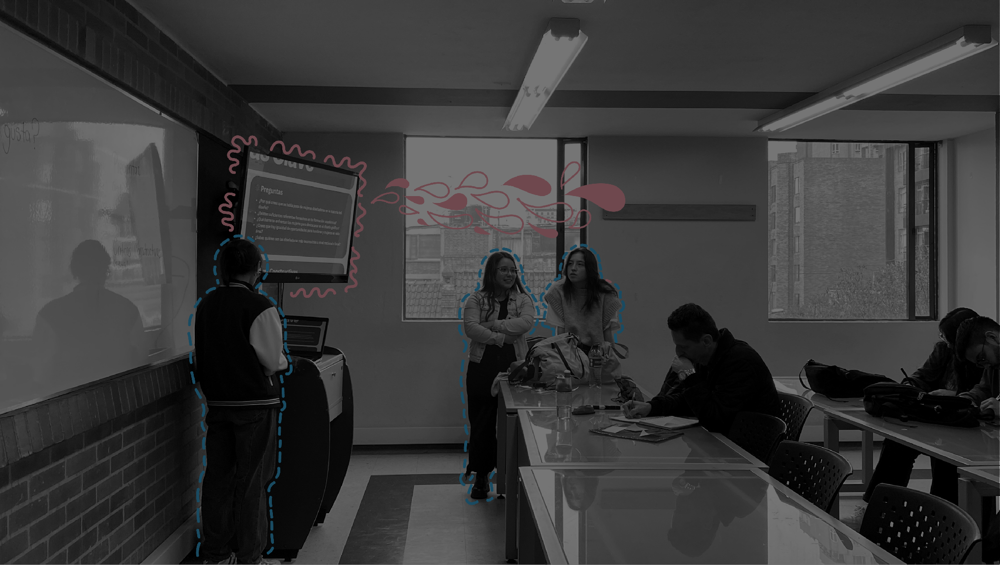
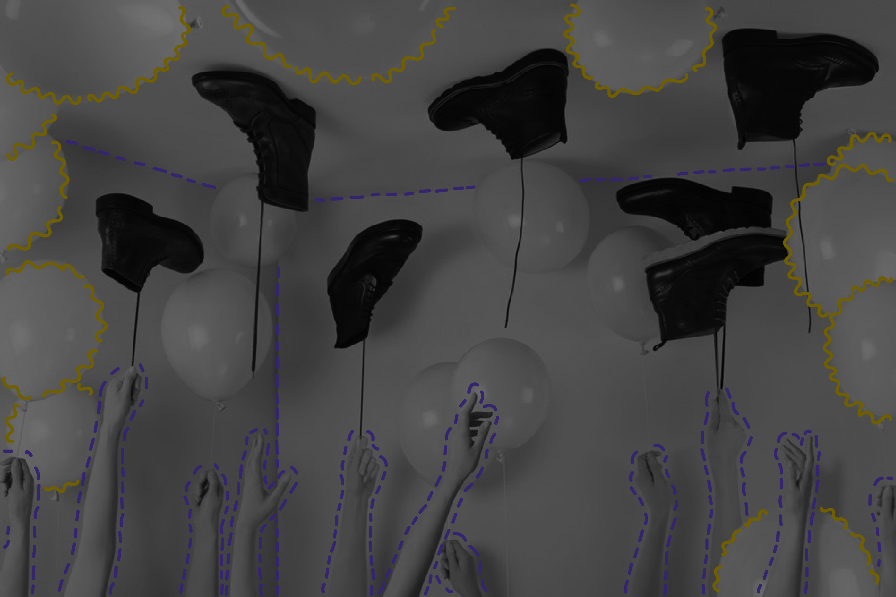
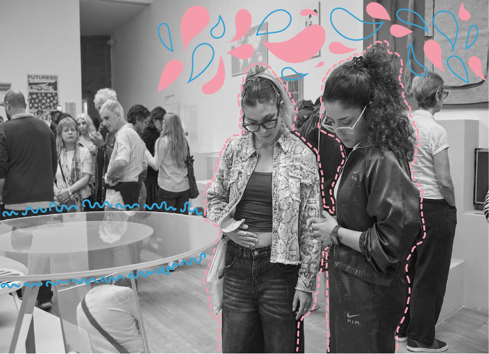

Una exploración del diseño femenino.
Sobre diptyka
Diptyka es un proyecto multidisciplinar que investiga y comunica el diseño gráfico desde una mirada crítica, con énfasis en exponer el trabajo de las mujeres. Es un espacio donde convergen teoría y práctica para rescatar aportes silenciados y construir nuevas narrativas visuales.
Diptyka aspira a ser una plataforma clave para visualizar referentes femeninas del diseño que siempre estuvieron allí, y al mismo tiempo poner en el mapa a diseñadoras emergentes, reconociéndolas como las futuras predecesoras que seguirán trazando la historia, amplificando sus voces y generando conexiones que impulsen su desarrollo profesional y creativo.
Historia
La historia del diseño gráfico ha sido contada, en su mayoría, desde una mirada hegemónica que ha silenciado o minimizado las contribuciones de muchas mujeres. En esta sección, Diptyka reescribe esa narrativa, recuperando figuras, proyectos y procesos que han sido omitidos por la historiografía tradicional. En lugar de una narración lineal, Diptyka presenta una colección de memorias visuales que reconocen las diversas formas de hacer, pensar y enseñar el diseño, poniendo en evidencia las contribuciones olvidadas de las mujeres en este campo.
Recursos
En Recursos, encontrarás una variedad de materiales y herramientas para potenciar tu práctica y conocimiento del diseño gráfico. Desde episodios del podcast hasta productos exclusivos a la venta, esta sección está pensada para ofrecerte contenido valioso que apoya tanto tu desarrollo creativo como profesional.
